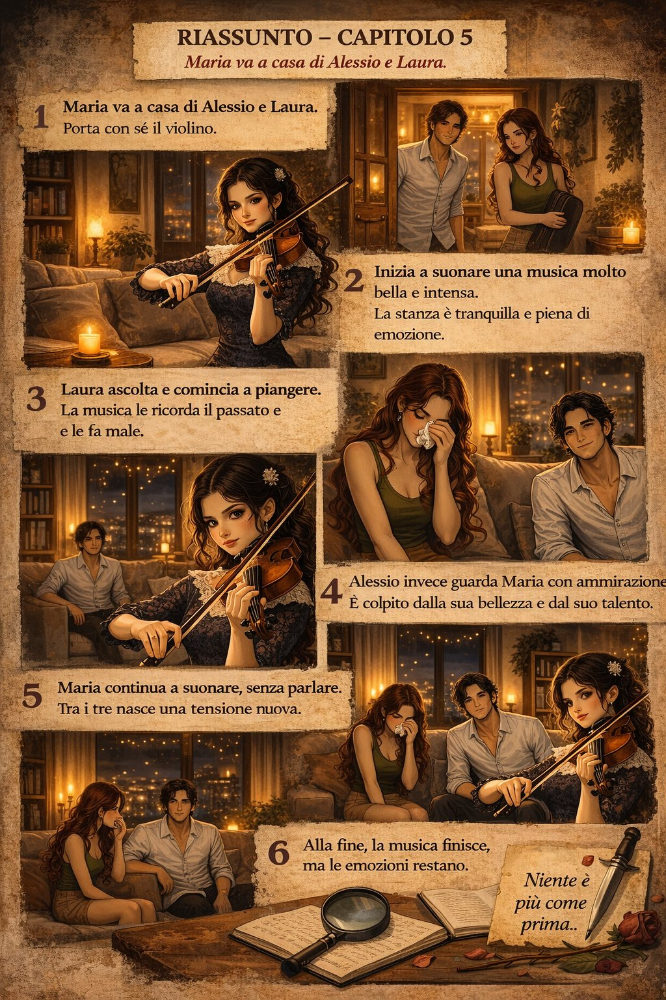

Capitolo 3: La Decisione
Una scelta decisiva ridefinisce alleanze, paure e desideri, aprendo la strada a conseguenze imprevedibili.

La sera era calda e silenziosa quando Alessio e Laura si ritrovarono sul piccolo balcone del loro appartamento. Una bottiglia di Chianti Classico toscano, rubacchiata qualche giorno prima da una cantina di Firenze, stappata tra loro due. Il vino rosso rubino scintillava nei bicchieri, catturando i riflessi delle luci della città.
Laura si appoggiò alla ringhiera, il vento leggero che le accarezzava i capelli. Alessio la osservò per un momento, ammirando il profilo delicato del suo viso illuminato dalla luna.
— Non possiamo fidarci di Enrico — disse lei, ruotando lentamente il bicchiere tra le dita. — E Don Salvatore è pericoloso.
Alessio si avvicinò, sfiorandole la schiena con una mano. — Lo so — rispose, la voce più bassa del solito. — Ma due milioni di euro ci cambierebbero la vita. Potremmo andare in America, ricominciare davvero.
Laura abbassò lo sguardo. Il vino le tingeva le labbra di un rosso intenso. — E se ci scoprono?
Alessio le prese la mano, sentendo il calore della sua pelle contro la sua. — Siamo bravi a quello che facciamo — sussurrò, avvicinandosi ancora. — Ma stavolta sarà diverso. Faremo un piano perfetto.
Laura lo guardò negli occhi, cercando ogni traccia di incertezza. Non ne trovò. Con un sospiro, sorrise appena e annuì. — Va bene. Accetto. Ma solo se saremo più attenti che mai.
Alessio le sorrise, poi sollevò il bicchiere. — Alla nostra fuga.
Laura lo imitò, i loro bicchieri si incontrarono con un ting delicato. Bevvero un sorso, il vino asciutto e fruttato che scendeva caldo in gola. Poi, senza dire una parola, Alessio le accarezzò la guancia e la baciò.
Un bacio lento, dolce, che sapeva di vino e promesse. Laura rispose al bacio, le dita che si intrecciarono nei suoi capelli. Per un momento, il pericolo, Enrico, Don Salvatore… tutto svanì.
Ma nell’ombra del vicolo sottostante, una figura immobile osservava la scena. Un bagliore di un obiettivo fotografico, un clic quasi impercettibile. Poi, silenzio.
La luna, alta nel cielo, continuava a brillare. La loro notte di pace stava per finire.